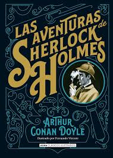

La chica invisible
+13 Inspirado en una vida de instituto, en un pueblo muy peculiar con una chica muy peculiar.
El campamento
+13 un grupo de personas muy diferentes coinciden en un campamento que pofria suceder.

Sherlock holmes
+10, Sherlock resolviendo los casos más curiosos que podrías encontrar.
What else?
La pareja perfecta (¿O la mentira perfecta?)
+16, se basa en una pareja o tal vez no a la que le pasaran cosas que no esperas.

La chica del tren
+16, Cualquier cosa puede pasar en un tren, descubre lo que le pasó a ella.

La asistenta
+16, detrás de las paredes de una casa se ocultan grandes cosas y una chica que se entera de todas..

Reina roja
+16, tal vez solo esta reina sea capaz de resolver este crimen.
Asesinato para principiantes
+12, quien sabe si cualquiera puede cometer un asesinato, vamos a descubrirlo